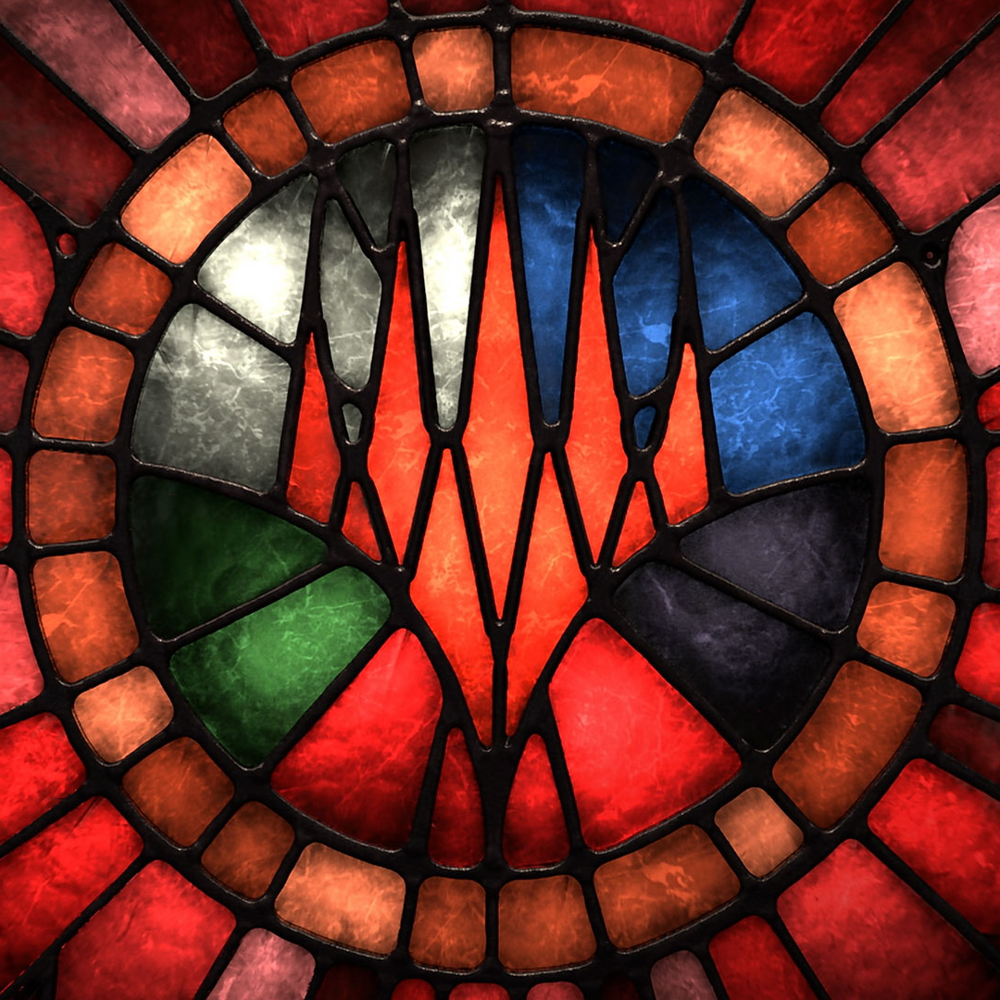

Kiera Castner
Hi there! :)

I'm a program manager that recently graduated from a coding boot camp. Have previously managed engineering and UI/UX teams. Extremely familiar with SDLC. Extensive experience with release management, build creation and source repositories. Have worked on multiple award winning projects, including two Game of the Years. Formerly of Cryptic Studios and Telltale Games.
Portfolio!

Magic: Legends
Releasing Soon!! Associate Producer
- Managed Engineering, UI/UX, and Environment art teams.
- Planned and coordinated major AI engine overhaul for engineering departments.
- Created builds, tracked dependencies (manually!! T_T), and managed source repositories.
- Supported dev team during pre-production and active production phases.

Star Trek Online
Associate Producer
- Supported Star Trek Online for nearly 3 years. Saw two expansions, multiple season releases, and hundreds of updates out the door.
- Functioned as a release manager - created builds, planned features, and oversaw multiple development teams.

Neverwinter
- Supported Neverwinter QA team while I was Cryptic's Senior QA Lead. Continued to provide QA support as a producer.
- Trained Neverwinter QA lead and multiple testers.
- Performed weekly server maintenance.
- Reviewed test plans and test strategies.
- Helped with "the really weird engine bugs" due to my in-depth knowledge of the Cryptic Engine ;D

Tales From The Borderlands
Android QA Lead
- Successfully shipped episodes to Google Play despite extremely tight deadlines and limited resources.
- Wrote automated testing scripts for Android development.
- Responsible for device compatibility testing across 15+ iOS/Android hardware surfaces.
- Won 3 team awards/bonuses for leadership and dedication to this project.

The Wolf Among Us
Won DICE Adventure Game of the Year!
Android QA Lead
- Led testing for Android versions of all episodes and supported testing for all episodes going to Xbox Arcade.
- Worked on Wolf Episode 5 while it was actively being developed for all platforms

Game of Thrones: A Telltale Series
Android/ iOS QA Lead.
- Often functioned as QA Lead across all platforms.
- Wrote automated testing scripts for Android development.
- Responsible for device compatibility testing across 15+ iOS/Android hardware surfaces.

The Walking Dead: Season 1
Won over 90 Game of the Year awards!!
Analyst
- Worked on mobile version of Walking Dead: Season 1

The Walking Dead: Season 2
Analyst
- Worked on mobile version of Walking Dead: Season 2
- Lots and lots of hardware device testing ;)

War Commander
Analyst
- Was assigned to War Commander: Rogue Assault dev team but often helped out with QA testing for War Commander.
War Commader: Rogue Assault
Analyst
- Worked on Rogue Assault while it was in preproduction.
- Set up initial company testing framework for Android and performed hardware testing across multiple devices.

Champions Online
- Performed weekly server maintenance & various support tasks.